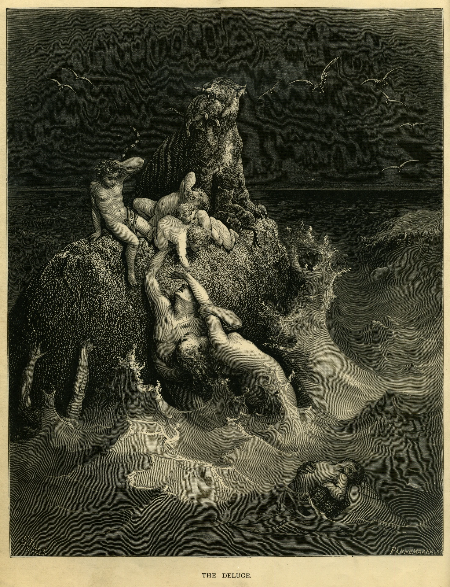

아직 펼치지 않은 카드
아직 펼치지 않은 카드
책이 된 말씀 · 4도레 성경 「대홍수」물이 차오르는 마지막 바위 위에서, 모두 무엇을 지키고 있을까요?물이 차오르는 바위 위에 사람과 호랑이가 있어. 모두 무엇을 지키고 있을까?
1866년프랑스 투르 · 영국 런던
도레 성경 「대홍수」
1866년, 귀스타브 도레의 그림을 넣은 커다란 성경이 프랑스와 영국에서 함께 나왔어요. 영국 판 맨 앞을 여는 그림 「대홍수」 아래 두 귀퉁이에는 이름이 하나씩 새겨져 있어요. 그린 사람과 새긴 사람, 두 이름을 찾고 하얀 줄 하나하나를 가까이 들여다보세요.
옛날에 아주아주 큰 성경책이 나왔어. 맨 앞 그림 아래에 이름 두 개가 숨어 있대. 그린 사람, 새긴 사람! 같이 찾아볼까?
검수 전 시안이에요(기준서 1판 · 키트 3판). 판화의 서명과 새기는 방법은 연구 누리집·박물관·판화 단체의 설명대로 옮겼어요. 상상은 ‘눈 감고 상상해 보기’에서만 해요.
시안 확인용카드 단계 미리 보기
1
그린 손, 새긴 손
1866년, 귀스타브 도레(Gustave Doré)의 그림을 넣은 성경이 프랑스 투르의 마메 출판사와 영국 런던의 카셀 출판사에서 함께 나왔어요. 빈 응용미술관에 있는 프랑스 판 한 권은 높이 42cm, 두께 9cm나 돼요.
여기 보이는 판화는 카셀 출판사의 영어 성경에 실린 것이에요. 성경 차례로는 일곱 번째 장면이지만, 이 책에서는 맨 앞을 여는 1번 그림이에요. 그림 아래 두 귀퉁이를 보세요. 이름이 하나씩 새겨져 있어요.
그림 속 다섯 곳을 하나씩 눌러 보세요. ‘가까이 보기’를 누르면 줄 하나하나가 보여요.

「대홍수」 · 영국 카셀 출판사의 영어 성경에 실린 1번 그림(아래 영어 제목 ‘THE DELUGE.’) · 귀스타브 도레 그림 · 파네마케르 새김 · 퍼블릭 도메인 · 위키미디어 공용(디지털 복원 Adam Cuerden)
그림 위의 숫자나 아래 번호를 눌러 보세요.
다섯 곳을 모두 찾았어요. 그린 손 하나와 새긴 손 하나가 이 한 장에 함께 남았어요.
“도레는 나를 자유롭게 두었다. 하지만 나는 그의 그림에 아무것도 고치지 않았다.”
같은 성경을 새긴 판화가 엘리오도르 피상(Héliodore Pisan)의 회고 · 세르주 세뤼티, utpictura18(엑스마르세유 대학)에 실린 말을 이 안내서가 옮김
도레는 나무판 위에 바로, 회색 명암으로 그림을 그렸어요. 그 회색을 가는 줄로 바꾸어 새기는 일은 판화가의 몫이었어요.
이 성경의 다른 그림들도 왼쪽 아래에는 ‘G. Doré’, 오른쪽 아래에는 새긴 사람의 이름이 있어요. 이사야 그림에는 ‘H. PISAN’, 사마리아 여인 그림에는 ‘JQUARTLEY’가 새겨져 있어요.
도레 아저씨는 나무판에 그림을 그리고, 판화가 아저씨는 칼로 새겼어. 아래 귀퉁이에 두 사람 이름이 있어!
물어보기하얀 물보라는 물감으로 칠했을까, 칼로 깎았을까?
눈 감고 상상해 보기
커다란 책을 두 손으로 받쳐 무릎에 올려요. 묵직해요. 두꺼운 표지를 넘기자 종이와 잉크 냄새가 올라와요. 맨 앞 그림이 나타나요. 검은 하늘, 끝없는 물결, 맨 위의 바위. 얼굴을 가까이 대면 하얀 줄 하나하나가 보여요. 누군가 칼끝으로 하나씩 깎아 낸 줄이에요.
눈을 감아 봐. 아주 크고 무거운 책을 무릎에 올려. 표지를 넘기면 종이 냄새가 나. 맨 앞 그림의 하얀 줄들은 누가 칼로 하나하나 깎았대.
나의 자리
모든 것이 흔들릴 때, 나는 무엇을, 누구를 끝까지 들어 올리고 싶나요?
무서울 때 나를 지켜 주는 사람은 누구야?
마음에 닿는 한 줄을 고르거나 직접 써 보세요. 한 줄을 남기면 이 자리의 도장이 찍혀요. 이 기기에만 저장돼요.
더 깊이
궁금한 칸만 펼쳐 읽어도 괜찮아요.
알고 보면
세워서 새긴 나무 이 판화의 나무판은 나뭇결과 직각으로 자른 면이에요. 프랑스에서는 ‘선 나무(bois debout)’ 판화라고 불렀어요. 이렇게 자른 단단한 나무에는 아주 가는 줄도 새길 수 있어요.
뷰린 판화가는 단면이 V자 모양인 쇠 칼, 뷰린(burin)을 오른손에 쥐고 나무에 홈을 팠어요.
3,200부, 200프랑 도레는 1862년에 이 일을 시작했어요. 1866년 판은 3,200부를 찍어 200프랑에 팔았어요.
찍을 때는 금속판 2020년 파리의 아르퀴리알 경매에, 이 성경을 찍을 때 쓴 판 다섯 개가 나왔어요. 나무토막 위에 금속판을 붙인 판으로, 피상·괴벨·파네마케르가 새긴 그림이었어요.
기록마다 다른 점
그림은 몇 점일까? 많은 자료가 241점이라고 해요. 엑스마르세유 대학의 연구 누리집 utpictura18은 1865년 12월에 나온 첫 판에 228점이 실렸고, 1866년 판에서 13점을 빼고 15점을 더했다고 적어요. 1866년 판을 ‘권두화 2점과 판화 228점’으로 적은 경매 기록도 있어요.
몇 번째 그림일까? 성경 차례로 늘어놓으면 「대홍수」는 일곱 번째 장면이에요. 그런데 영국 카셀 판에서는 책 맨 앞을 여는 그림(권두화)으로, ‘1번 그림(Plate I)’이라는 이름이 붙었어요.
뷰익이 처음 만들었을까? utpictura18은 나무를 세워 새기는 이 판화를 1770년대 영국의 토머스 뷰익(Thomas Bewick)이 만들었다고 해요. 뷰익 협회는 뷰익이 이 방법을 처음 만든 것은 아니지만, 그리고 새기고 찍는 솜씨를 크게 발전시켜 눈길을 끌었다고 해요.
직접 가 보기
확인한 날 · 2026년 11월 18일 · 바뀌기 쉬운 정보라 정기적으로 다시 확인해요
1866년 판은 빈 응용미술관(MAK), 프랑스 국립도서관처럼 여러 곳에 있어요. 빈 응용미술관은 갖고 있는 책의 크기와 판화가 이름들을 누리집에 올려 두었어요.
책장을 넘겨 보고 싶다면, 프랑스 국립도서관이 디지털로 옮긴 1866년 판 1권을 인터넷 아카이브에서 볼 수 있어요.
두 이름을 찾아서 금박
그림 속 다섯 곳을 모두 찾아 읽으면 카드에 금박이 입혀져요.
두 이름 · 하얀 물보라 · 회색 하늘 · 수평선, 다섯 곳을 모두 찾아 읽기
아이와 함께 끝까지 채색
아이와 함께 ‘영화처럼 보기’를 끝까지 보면 카드가 채색돼요.
아이와 함께 ‘영화처럼 보기’를 끝까지 보기
근거 보기 (16)
- 세르주 세뤼티, utpictura18(엑스마르세유 대학) 「Gustave Doré and the Bible」 — 도레는 나무판에 바로 그리고 회색 명암(그리자유)은 판화가에게 맡김, 피상의 회고, 결과 직각으로 자른 ‘bois debout’, 뷰익 1770년대(이 누리집의 설명), 1862년 시작, 1865년 12월 첫 판 228점, 1866년 판 13점 빼고 15점 더함, 3,200부·200프랑, 마메와 카셀이 함께 펴냄
- utpictura18 그림 기록: 이사야(서명 왼쪽 ‘G. Doré’ · 오른쪽 ‘H. PISAN’), 나무를 세워 새긴 판화
- utpictura18 그림 기록: 사마리아 여인(서명 왼쪽 ‘G. Doré’ · 오른쪽 ‘JQUARTLEY’)
- 프린스턴 대학 그래픽 아트 컬렉션: 판화에 붙는 줄임말 — Sc.·sculpsit = 새긴 사람, Del. = 그린 사람
- 뷰익 협회: 기술 배경 — 회양목을 결과 직각으로 자름, 하얗게 보일 곳을 깎아 내고 도드라진 면에 잉크, 오른손에 뷰린, 뷰익이 이 방법을 처음 만든 것은 아니지만 크게 발전시킴
- 에스허르 인 헷 팔레이스(헤이그): 나무 판화 — 결을 가로질러 새김, 단면이 V자인 뷰린, 아주 가는 줄로 회색을 냄, 도레의 섬세함과 회색 톤
- 빈 응용미술관(MAK) 소장 기록: La Sainte Bible(1866, 마메) 1권 — 높이 42cm·너비 32.5cm·두께 9cm, 판화가 아돌프 프랑수아 파네마케르 등
- Fine Books Magazine(2020) — 1866년 성경을 찍은 금속판(나무토막 위에 붙임) 다섯 개가 파리 아르퀴리알 경매에, 피상·괴벨·파네마케르가 새김
- 드루오 경매 기록 — 1866년 마메 판 두 권, 권두화 2점과 판화 228점
- 위키미디어 공용: 이 판화 파일 정보 — ‘Plate I’, 성경의 권두화(Frontispiece), 카셀 출판사 영어 성경에서 옮김
- Heritage Images: 「대홍수」(1866) — 성경 삽화본의 권두화
- Bible.Gallery: 「대홍수」 — 도레 성경 그림 가운데 일곱 번째
- 인터넷 아카이브(프랑스 국립도서관 갈리카 자료): La Sainte Bible 1866년 마메 판 1권
- 대한성서공회 개역개정: 창세기 7장 19~20절
- Wikipedia: Gustave Doré’s illustrations for La Grande Bible de Tours(길잡이) — 마메와 카셀이 함께 펴냄, 「대홍수」는 차례로 7번
- Wikipedia: Gustave Doré(길잡이) — 1866년 성경 그림 241점(마메, 투르 · 카셀, 영국)
그림·사진·소리 출처
‘처음 만나는 기독교 문화’의 깊은 카드예요. 실제 인물의 사진은 쓰지 않았어요. 카드 단계와 남긴 글은 이 기기에만 저장돼요.